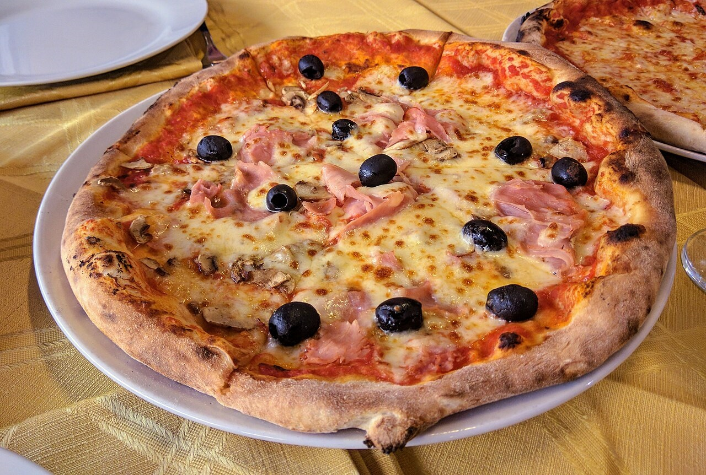
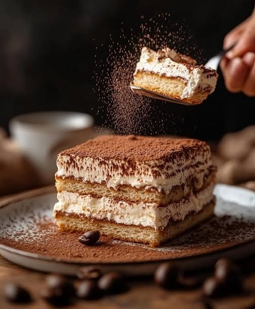
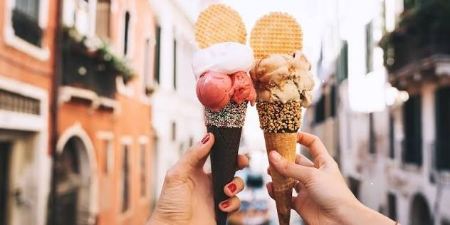
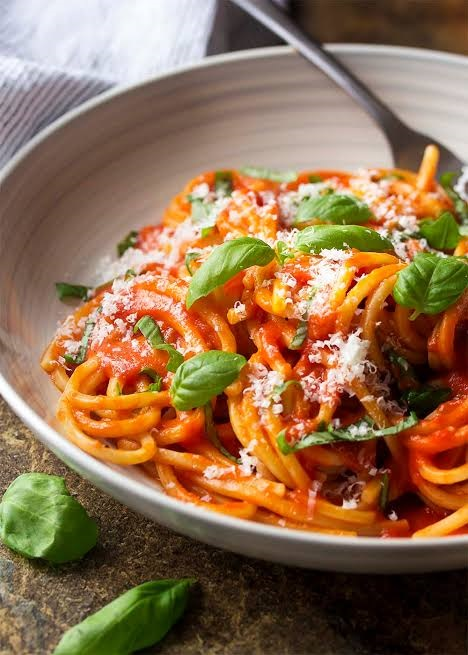

Italian food is famous around the world for its focus on fresh ingredients, simple recipes, and rich regional traditions.

Pizza is one of Italy's most famous foods.The core of authentic Italian pizza lies in its absolute simplicity, high-quality fresh ingredients, and centuries-old culinary tradition. Originating in Naples, Italy, traditional pizza is defined by a light, airy dough made simply from flour, water, yeast, and salt, which is left to ferment for up to 48 hours to develop its distinct flavor.

Tiramisu translates literally to "pick me up" or "cheer me up" in Italian, a nod to its potent blend of high-energy ingredients: strong espresso, sugar, and rich eggs.
The Birthplace: Most culinary historians credit the restaurant Le Beccherie in Treviso during the late 1960s. It evolved from sbatudin, a traditional Venetian home remedy of egg yolks whipped with sugar used to give energy to children and the sick.

Gelato translates simply to "frozen" in Italian. While people often call it "Italian ice cream," it is a distinctly different craft.Authentic gelato is sweeter, denser, and smoother than American ice cream because it is churned much slower (incorporating less air) and uses more milk than heavy cream.

Traditional Italian pasta is anchored in simplicity, relying on high-quality durum wheat semolina, water (and sometimes eggs for fresh varieties), and fundamental techniques like finishing the pasta directly in the sauce with starchy cooking water.